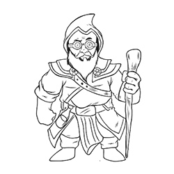
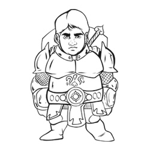
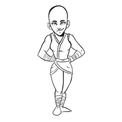
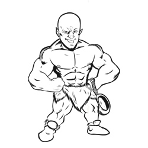

Galeria
|  |
Markirin Gira-Chave é um Mago Gnomo que estudou na universidade UUAA, a história dele já é encontrada no texto principal. |
|  |
Alfric é um Humano Guerreiro de 20 anos que viveu sua infância em um orfanato, aos 13 anos ele derrotou o lider do orfanato para liberar as crianças que viviam em condições horriveis, hoje ele busca aventuras e um sentido na vida. |
|  |
Ryca é uma Monja do Caminho da Palma Aberta, ela evita violencia, pois foi assim que seu monastério á ensinou, após um tempo ela decidiu sair de lá para explorar o mundo. |
|  |
Salomão Omão é um Orc Branco, de 30 anos, Heroi de Vila, Pai de Familia, com uma linda esposa e três belos filhos, vive na vila de Salon, e esta vila um dia foi atacada por um dragão branco, os Orcs lutaram bravamente contra o dragão, e então, Salomão deu o ultimo ataque, e ganhou todo o crédito. Salomão é um homem de coração puro, e viaja o mundo em busca de riquezas para melhorar a vila. |